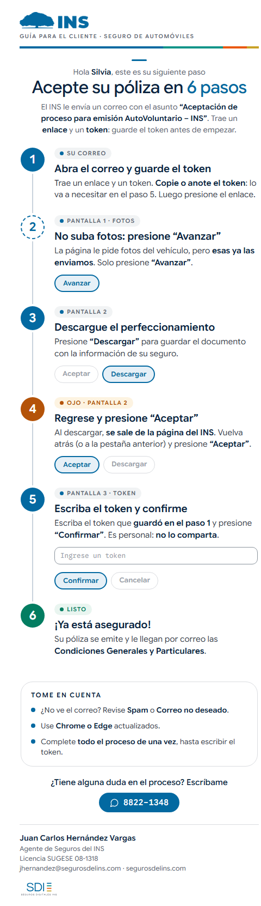

Le mandás al cliente por WhatsApp los 6 pasos para aceptar la póliza en la página del INS. No sale correo: el del token lo manda el INS.
Desde la cotización de Silvia · BRK454

Hola Silvia, soy Juan Carlos, su agente del INS. Ya tenemos las fotos de su Toyota RAV4 (BRK454). El siguiente paso es aceptar la póliza: el INS le va a enviar un correo con el asunto «Aceptación de proceso para emisión AutoVoluntario – INS». Aquí le dejo los 6 pasos para hacerlo sin enredos: guia.appsegurosdigitales.com/k/7Hq2Lm Cualquier duda me escribe por aquí.